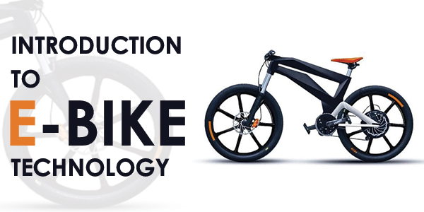

.webp)
Typhoon Electric bicylce
$30,300
Nowadays, most of the countries are using electrical bicycles. The use of cycle than vehicles is always green to the environment, but an E-bike is the biggest adoption of green transportation of the decade.
Just think of E-bike in place petrol operated scooters rather than a normal bike.
An Ebike uses rechargeable batteries which can travel up to 25 to 45 kmph. As a result, it is faster than the normal cycle to reach your destination quicker and in better shape.
E-bike is an electric and power-assisted bike which is one of the fastest-growing technology of the bicycle industry. This bicycle uses an electric motor to help you along. So you can ride it like a normal bicycle, but with less effort.
Here, we’re going to compare an E-bike to a regular bike rather than a motorbike. In this article, we will look at how E-bike differs from the regular bike.
An E-bike is an eco-friendly bike. It is just like our normal bicycle. However, E-bike runs on electricity rather than liquid fuel; it doesn’t produce any harmful emissions into the atmosphere. For the same reason, electric bikes don’t generate more noise.
If you are using a pedal-operated E-bike, then it is very healthy. When you turn the pedals, your whole body works. So you are getting exercise when you ride an E-bike.
If you are using a pedal-operated E-bike, then it is very healthy. When you turn the pedals, your whole body works. So you are getting exercise when you ride an E-bike.
You can ride the E-bike with speeds up to 25 kmph in motor assistance mode. This speed is quite enough to ride on city streets and everywhere else. This is the maximum speed allowed by government law; otherwise, the bike will ride too fast. You can reach the fast speed as per the motor power, but motor manufacturers limit the speed for you.
E-bikes are available in various types with several brands. Nowadays, almost all regular bicycle manufacturers produce electric bikes too. So, you will all types of bicycles in the market from both regular to special ones. E-bikes are available as city bikes, road bikes, mountain bikes, folding bikes, cargo, and family bikes, and many others.
Electric Mountain Bike E-ST100
$50,000
Typhoon Electric bicylce
$30,300
.webp)
Leader E-Power L6 27.5T
$35,000
.webp)
SWAGTRON Envy Steel
$29,000